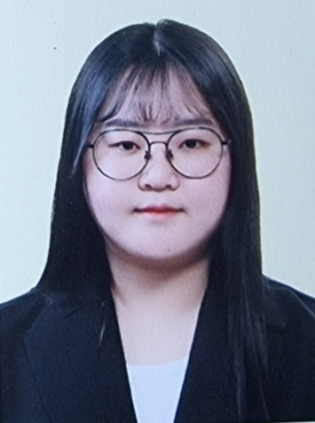
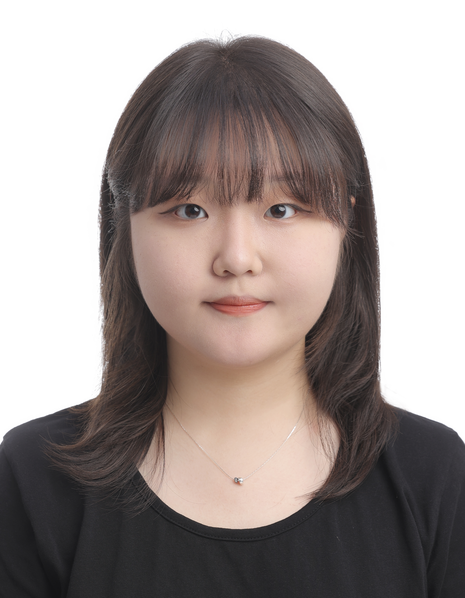
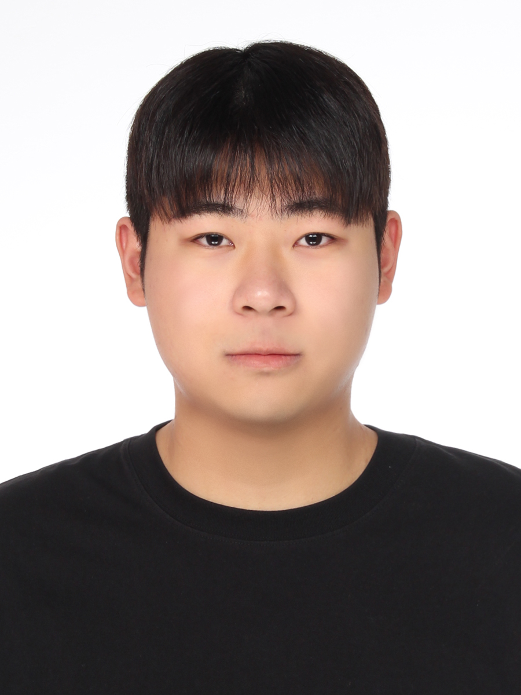
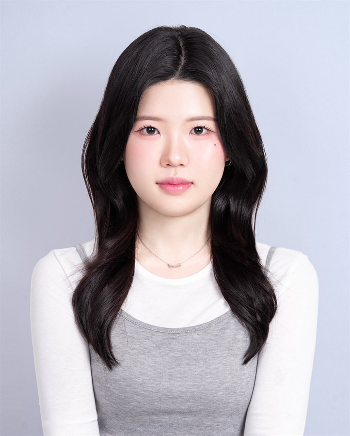

박사과정Ph.D. Students
이정민Jeong-Min Lee
동아대학교 응용생명과학과
Dept. of Applied Bioscience, Dong-A University
바이오차 적용 농경지의 탄소 추적·예측 연구
2024·2025 이공계 박사과정생 국가연구장려금 선정
이예지Ye-Ji Lee
동아대학교 응용생명과학과
Dept. of Applied Bioscience, Dong-A University
석사과정Master's Students

박정원Jung-Won Park
동아대학교 응용생명과학과
Dept. of Applied Bioscience, Dong-A University
학부연구생Undergraduate Researchers

문성빈Seong-Bhin Moon
동아대학교 생명자원산업학과
Dept. of Life Resources Industry, Dong-A University

최현정Hyun-Jung Choi
동아대학교 스마트그린자원학과
Dept. of Smart Green Resources, Dong-A University